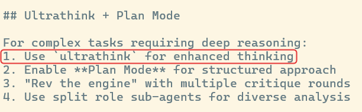
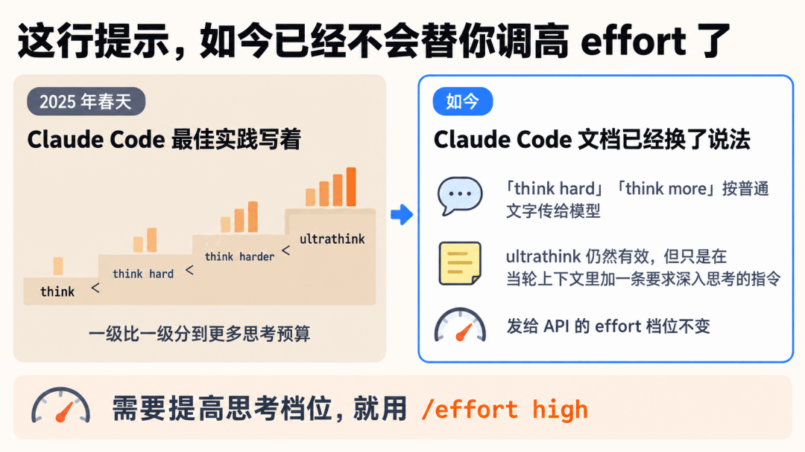
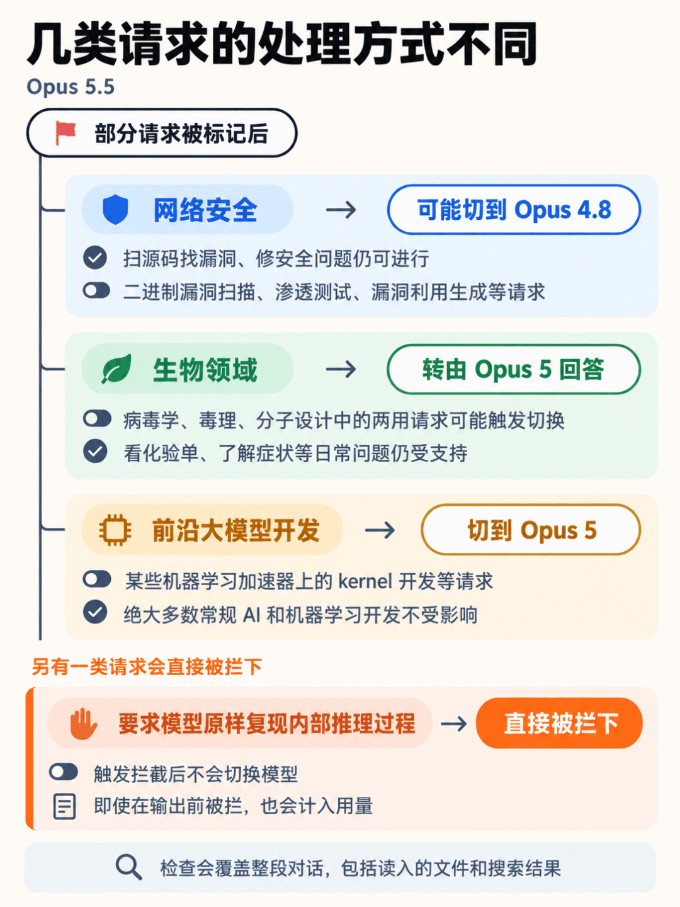

写在前面。9 月 22 日，Anthropic 在开发者博客发布了 Opus 5.5 使用指南，作者是 Addy Osmani。我对照官方文档和社区反馈，挑出 Claude Code 用户最值得动手调整的几处。
前几天翻自己的 Claude Code 配置，在 ~/.claude/rules/performance.md 里看到这么一行。
Use `ultrathink` for enhanced thinking
这行配置当年有官方依据。2025 年春天，Anthropic 的 Claude Code 最佳实践写着 think < think hard < think harder < ultrathink，一级比一级分到更多思考预算。
如今，Claude Code 文档已经换了说法。「think hard」「think more」按普通文字传给模型，不再触发设置。ultrathink 仍然有效，但只是在当轮上下文里加一条要求深入思考的指令，发给 API 的 effort 档位不变。
这行提示，如今已经不会替你调高 effort 了。

1. 删掉泛泛的思考提醒
指南建议删掉「think carefully」这类常驻提醒。Opus 5.5 每次回复前都会思考，思考功能始终开启，不能关闭；要调节思考投入，可以设置 effort 档位。迁移文档也说明了这一点。
Anthropic 在一个聊天产品里做过测试，删掉「think carefully」后，回复开始得更早，质量没有明显下降。
但这个结果不能直接套到所有任务上。Hacker News 上一位开发者就有不同体验。他做任务规划时常写「一步一步过一遍」，否则模型会漏掉一个依赖问题，第 2 步用到的功能，要到第 14 步才有。他说，自己在 Opus 5.5 上专门试过，问题依旧。
我的取舍是，删掉泛泛的常驻提醒，把需要检查的步骤和依赖写具体。需要提高思考档位，就用 /effort high。第 37 期 Claude Code 更新速递讲过，Opus 5.5 默认是 medium。
2. 在 CLAUDE.md 写清什么时候停
这是我最想先加上的一条。
Opus 5.5 跑长任务时会边干边汇报，有时汇报完就停了。它可能总结一遍，告诉你下一步要做什么，却没有接着做；也可能问「要不要我继续」，或者列出几个并不妨碍后续工作的选项，等你来挑。
指南建议在 CLAUDE.md 里写清停止条件。下面按原意译成中文。
不需要我参与的步骤，直接往下做。状态说明和你的下一步操作放在同一条消息里。
只在两种情况下停下来问我：没有我就无法继续；或者要做破坏性操作，比如删除数据、强制推送、改动这个仓库以外的任何东西。这段可以按项目调整，但风险操作前的确认要保留。指南也提醒，破坏性命令的权限确认别关。
社区反馈恰好说明了为什么要留这一句。GitHub 的 issue #97117 里，有人说从 Opus 4.6 换到 5.5 后，模型不断扩大任务范围，最后只好换回去。HN 上也有人抱怨它「太想独立做主」，做出的决定和自己的建议正相反。
让它继续做完当前任务，也要写清哪些操作必须先问。如果你习惯结对编程，希望它动手前先说计划，就在 CLAUDE.md 里说明。指南说，这两种工作方式都可以要求它遵守。
3. 把任务清单放进文件
长任务会填满上下文窗口，Claude Code 随后会把早期对话压缩成摘要。只留在对话里的清单，可能在压缩时遗漏细节；写进文件后，模型可以重新读取，你也能随时查看进度。
指南给的写法很短。
在 TASKS.md 里维护一份清单。每完成一项就勾掉，发现新的事项就加进去。还有一个相关变化。Claude Code 更新日志记载，从 v2.1.233 起，在 Opus 4.8、Sonnet 5、Fable 5 等较新模型上，内置待办工具 TodoWrite 默认被移除。需要持续跟踪长任务时，明确要求它维护一份文件，会更方便检查。
4. 把待处理事项放在汇报最前面
长任务结束，先看它需要你做什么，比如一个没拍板的决定，或一处等你批准的改动，再读其余总结。
指南说，Opus 5.5 比 Opus 5 更善于交代工作结果。如果想固定汇报顺序，可以在 CLAUDE.md 里加一句。
每次运行结束，用三个小标题收尾：需要我处理的、改了什么、发现了什么。做调研时，再加一句「标出你没能确认的内容，并说明你去哪里查过」。这样读报告时，就能分清哪些有依据，哪些还要继续查。
5. 检查自动切换模型的设置
这一节指南写得短，却值得单独看。
Opus 5.5 是首个带有 Fable 级生物和网络安全防护的 Opus。部分请求被标记后，会换到旧模型继续回答，Claude Code 会显示切换提示。
按 Anthropic 帮助中心的说明，几类请求的处理方式不同。
• 网络安全。扫源码找漏洞、修安全问题仍可进行；二进制漏洞扫描、渗透测试、漏洞利用生成等请求，触发防护后可能切到 Opus 4.8。 • 生物领域。病毒学、毒理、分子设计中的两用请求可能触发切换，转由 Opus 5 回答；看化验单、了解症状等日常问题仍受支持。 • 前沿大模型开发。某些机器学习加速器上的 kernel 开发等请求，会在触发防护后切到 Opus 5，绝大多数常规 AI 和机器学习开发不受影响。
检查会覆盖整段对话，包括读入的文件和搜索结果。触发点可能在前面的内容里。
碰到切换提示，可以用 /model 切回，也可以按两下 Esc，修改上一条消息后重试。如果你希望切换前先征求意见，就在 /config 里关闭「Switch models when a message is flagged」。关闭后，相关请求会暂停，等你决定。
切回去又被换，可能是原先触发防护的内容仍在对话里。可以新开会话处理当前任务；确认是误判，就用 /feedback 反馈。
另有一类请求会直接被拦下。要求模型原样复现内部推理过程，触发拦截后不会切换模型，而且即使在输出前被拦，也会计入用量。

正常询问方案依据仍然可以。指南给的示例是「用三句话解释你为什么选这个方案」。HN 上有开发者报告过含「reasoning」的代码审查提示词导致会话被拦，但这只是个人反馈，不能据此把这个词当成固定禁词。